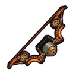

Arco de Gatilho Mais Rápido
Arco · Tier 7 · Nível 22
As leis locais de caça permitem o uso de arcos? Ah, então temos a coisa certa para você!
Atributos
Ataque
300
Defesa
75
Economia
Valor
110.000
Tempo de fabricação
2h 30min
XP do comerciante
30.000
Trabalhadores: Carpinteiro 19, Mestre 15
Receita


Marcos do projeto
7
Tempo de fabricação -25%
18
-34 Madeira
32
Valor +25%
50
-9 Madeira de ferro
80
Chance de qualidade +1